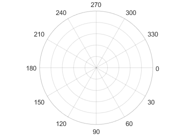
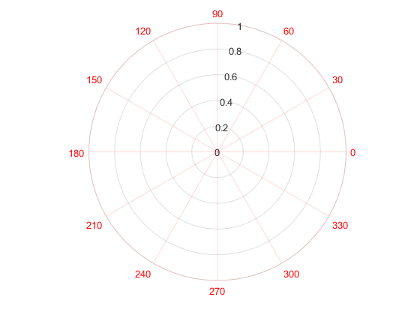
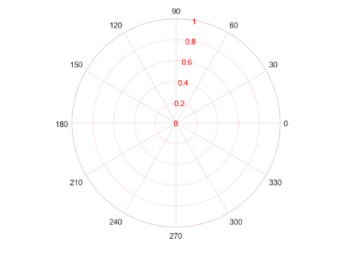

polaraxes
Create polar axes
Description
polaraxes creates the default polar axes in the current
figure.
polaraxes( specifies
properties for the Name,Value)PolarAxes object using one
or more name-value pair arguments, for example,
'ThetaDir','clockwise'. For a list of properties, see
PolarAxes Properties.
polaraxes(
creates the polar axes in the figure, panel, or tab specified by
parent,___)parent, instead of in the current figure. Use this option
alone or with name-value pair arguments.
pax = polaraxes(___)PolarAxes object created. Use
pax to query and set properties of the PolarAxes object after it is created. For a list
of properties, see PolarAxes Properties.
Examples
Create a new figure with polar axes and assign the polar axes object to pax. Add a plot to the axes. Then, use pax to modify axes properties.
figure
pax = polaraxes;
theta = 0:0.01:2*pi;
rho = sin(2*theta).*cos(2*theta);
polarplot(theta,rho)
pax.ThetaDir = 'clockwise';
pax.FontSize = 12;
Before R2022a, polar axes do not include degree symbols by default. To add them, get the polar axes using pax = gca. Then modify the tick labels using pax.ThetaTickLabel = string(pax.ThetaTickLabel) + char(176).
Create a figure with polar axes and assign the polar axes object to pax. Then, ensure pax is the current axes before calling the polarplot function.
figure pax = polaraxes; polaraxes(pax) polarplot(1:10)

Input Arguments
Name-Value Arguments
Specify optional pairs of arguments as
Name1=Value1,...,NameN=ValueN, where Name is
the argument name and Value is the corresponding value.
Name-value arguments must appear after other arguments, but the order of the
pairs does not matter.
Before R2021a, use commas to separate each name and value, and enclose
Name in quotes.
Example: 'ThetaZeroLocation','top','ThetaDir','clockwise'
The properties listed here are only a subset. For a complete list, see PolarAxes Properties. Some graphics functions reset axes properties when plotting. To avoid graphics functions from overriding the property values, set axes properties after plotting.
Direction of increasing angles, specified as one of the values in this table.
| Value | Result |
|---|---|
'counterclockwise' | Angles increase in a counterclockwise direction.
|
'clockwise' | Angles increase in a clockwise direction.  |

Example: ax.ThetaDir = 'clockwise';
Color of the theta-axis, including the theta-axis grid lines, tick marks, tick labels. Specify this value as an RGB triplet, a hexadecimal color code, a color name, or a short name.
Note
If you specify the GridColor property, then the grid lines use
the color in the GridColor property instead. See GridColorMode for more
information.
For a custom color, specify an RGB triplet or a hexadecimal color code.
An RGB triplet is a three-element row vector whose elements specify the intensities of the red, green, and blue components of the color. The intensities must be in the range
[0,1], for example,[0.4 0.6 0.7].A hexadecimal color code is a string scalar or character vector that starts with a hash symbol (
#) followed by three or six hexadecimal digits, which can range from0toF. The values are not case sensitive. Therefore, the color codes"#FF8800","#ff8800","#F80", and"#f80"are equivalent.
Alternatively, you can specify some common colors by name. This table lists the named color options, the equivalent RGB triplets, and the hexadecimal color codes.
| Color Name | Short Name | RGB Triplet | Hexadecimal Color Code | Appearance |
|---|---|---|---|---|
"red" | "r" | [1 0 0] | "#FF0000" |
|
"green" | "g" | [0 1 0] | "#00FF00" |
|
"blue" | "b" | [0 0 1] | "#0000FF" |
|
"cyan"
| "c" | [0 1 1] | "#00FFFF" |
|
"magenta" | "m" | [1 0 1] | "#FF00FF" |
|
"yellow" | "y" | [1 1 0] | "#FFFF00" |
|
"black" | "k" | [0 0 0] | "#000000" |
|
"white" | "w" | [1 1 1] | "#FFFFFF" |
|
"none" | Not applicable | Not applicable | Not applicable | No color |
This table lists the default color palettes for plots in the light and dark themes.
| Palette | Palette Colors |
|---|---|
Before R2025a: Most plots use these colors by default. |
|
|
|
You can get the RGB triplets and hexadecimal color codes for these palettes using the orderedcolors and rgb2hex functions. For example, get the RGB triplets for the "gem" palette and convert them to hexadecimal color codes.
RGB = orderedcolors("gem");
H = rgb2hex(RGB);Before R2023b: Get the RGB triplets using RGB =
get(groot,"FactoryAxesColorOrder").
Before R2024a: Get the hexadecimal color codes using H =
compose("#%02X%02X%02X",round(RGB*255)).
For example, ax.ThetaColor = 'r' changes the color to red.

Color of the r-axis, including the r-axis grid lines, tick marks, and tick labels. Specify this value as an RGB triplet, a hexadecimal color code, a color name, or a short name.
Note
If you specify the GridColor property, then the grid lines use
the color in the GridColor property instead. See GridColorMode for more
information.
For a custom color, specify an RGB triplet or a hexadecimal color code.
An RGB triplet is a three-element row vector whose elements specify the intensities of the red, green, and blue components of the color. The intensities must be in the range
[0,1], for example,[0.4 0.6 0.7].A hexadecimal color code is a string scalar or character vector that starts with a hash symbol (
#) followed by three or six hexadecimal digits, which can range from0toF. The values are not case sensitive. Therefore, the color codes"#FF8800","#ff8800","#F80", and"#f80"are equivalent.
Alternatively, you can specify some common colors by name. This table lists the named color options, the equivalent RGB triplets, and the hexadecimal color codes.
| Color Name | Short Name | RGB Triplet | Hexadecimal Color Code | Appearance |
|---|---|---|---|---|
"red" | "r" | [1 0 0] | "#FF0000" |
|
"green" | "g" | [0 1 0] | "#00FF00" |
|
"blue" | "b" | [0 0 1] | "#0000FF" |
|
"cyan"
| "c" | [0 1 1] | "#00FFFF" |
|
"magenta" | "m" | [1 0 1] | "#FF00FF" |
|
"yellow" | "y" | [1 1 0] | "#FFFF00" |
|
"black" | "k" | [0 0 0] | "#000000" |
|
"white" | "w" | [1 1 1] | "#FFFFFF" |
|
"none" | Not applicable | Not applicable | Not applicable | No color |
This table lists the default color palettes for plots in the light and dark themes.
| Palette | Palette Colors |
|---|---|
Before R2025a: Most plots use these colors by default. |
|
|
|
You can get the RGB triplets and hexadecimal color codes for these palettes using the orderedcolors and rgb2hex functions. For example, get the RGB triplets for the "gem" palette and convert them to hexadecimal color codes.
RGB = orderedcolors("gem");
H = rgb2hex(RGB);Before R2023b: Get the RGB triplets using RGB =
get(groot,"FactoryAxesColorOrder").
Before R2024a: Get the hexadecimal color codes using H =
compose("#%02X%02X%02X",round(RGB*255)).
For example, ax.RColor = 'r' changes the color to red.
